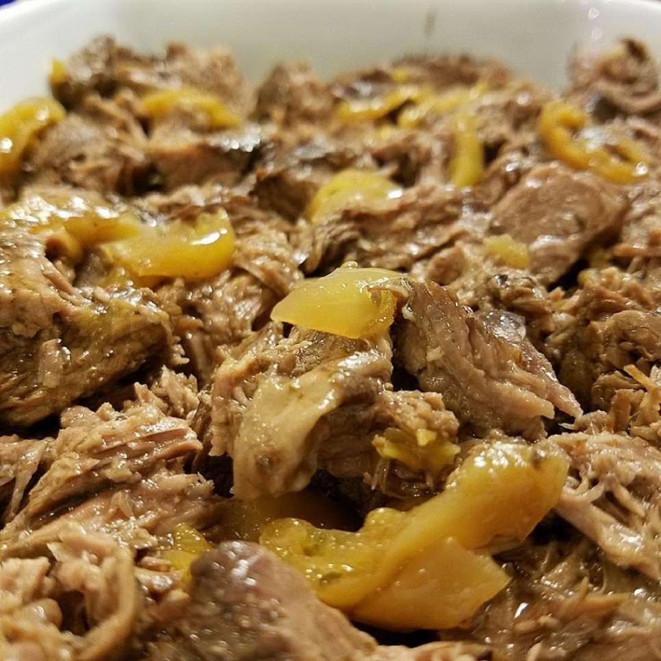

Home
Mississippi Pot Roast

Mississippi Pot Roast
Mississippi Pot Roast is the perfect dish to make in the slow cooker with a chuck roast, gravy, and pepperoncini peppers. The tender, tangy shredded beef is delicious with mashed potatoes or piled into hoagie rolls.
This easy Mississippi Pot Roast recipe is a shortcut dinner that never fails to please everyone at your table.
Ingredients
These are the ingredients you'll need to make this top-rated Mississippi Pot Roast recipe:
- Chuck Roast: This Mississippi Pot Roast starts with one 3-pound chuck roast. If your roast is larger or smaller, adjust the recipe.
- Pepperoncini: You'll use both the juice and the peppers from a pepperoncini jar.
- Butter: A stick of butter locks in moisture and keeps the roast from drying out.
- Packaged Mixes: Use one packet of au jus gravy mix and one packet of buttermilk ranch dressing mix.
- Seasonings: Simply season the roast with salt and pepper.
How to Make Mississippi Pot Roast
You'll find the full, step-by-step recipe here — but here's a brief overview of what you can expect when you make Mississippi Pot Roast:
- Simply combine all the ingredients in a slow cooker.
- Cook on Low until the meat is fork-tender.